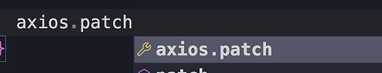

HOME
Updating Data
Add a button
To update the data let's add another button.
It's worth noting againg that in a real application we would need a
form for updating data, but that takes away from the main focus of
this lesson.
To fix the alignment issue with the buttons wrap the buttons in a div,
and give the first button a bootstrap x margin of 1.
Implimenting Update functionality
Then we get the onClick ready to update a user...
Now let's create this function just above the return.
The function will take a user obj.
 Inside that function we create an updatedUser object and spread the
current user...
Then we set the name to user.name with an excalamation...
Inside that function we create an updatedUser object and spread the
current user...
Then we set the name to user.name with an excalamation...
After that call setUsers and because we are updating an object, we
need to map the users.
In the map we pass an arrow function...
and if the id of the current user equals the id of the user that is
passed to this function, we return the updated user, Otherwise return
the same user obj...
If we test this out it would add an exclamation to the user.
Now we need to call the server to save the changes.
Save the changes to the server
For updating data, we can either use the 'put' method...
Or the 'patch' method...

What's the difference?
Well, in HTTP we use the put method for replacing an object, and the
patch method for updating, or 'patching' one or more of it's
propertys.
The method we choose really depends on how the backend is built.
💡Some backends don't support the patch method, they only accept the
put method.
✅ In our case here, since we are only updating a single property,
we're gonna use the patch method.
So call the patch method, and paste in the jsonPlaceholder endpoint
for the users...
And put the id at the end...
Now, just like how we created a user, here we need to pass the
updatedUser in the body of the request.
So we pass it as the second arg to the patch method...

Now, if the call to the server succeeds, theres nothing extra we want
to do.
But we should still catch any errs, and restore the list if there
are...
With that, everything should be working.
We've got a patch request to this url...
In the request payload we have our user object that is updated...
Then we have the object that was returned by the server...
That should be everything working. If you want to simulate an err,
just mess up the request url in you code.